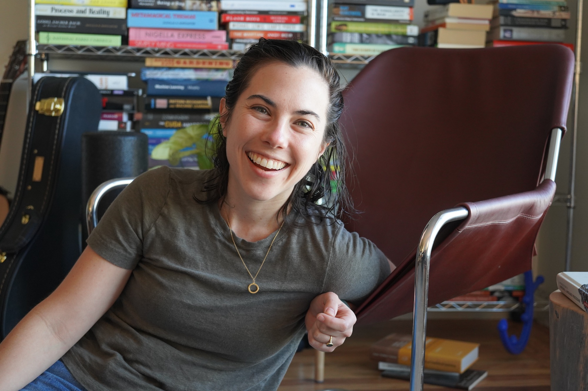

VP of Product at Curative. Healthcare has a business model problem, not a technology problem. I’ve spent 15 years learning how the system actually works — and what happens when it doesn’t.

I’ve spent my career trying to understand healthcare as a system — not just a product category. That means seeing it from the infrastructure layer, the data layer, the founder layer, and now the incentive layer. Most problems that look like technology problems aren’t.
I also write code. Not as a party trick — because understanding the full stack changes how you think about what’s worth building.